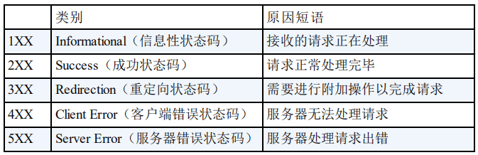

把最近看的后端面试题进行整理。天道好轮回，感觉这些已经学了n遍了还要看:(
计算机网络
OSI七层协议，五层协议和每层中常见的协议
七层：物理层、数据链路层、网络层、传输层、会话层、表示层、应用层
五层：物理层、数据链路层、网络层、传输层、应用层
- 应用层：HTTP（超文本传输协议）、FTP（文件传输协议）、DNS（域名解析协议）
- 传输层：TCP（传输控制协议）、UDP（用户数据协议）。
- 网络层：IP（互联网协议/数据包协议）、ICMP（网际报文控制协议）、RIP（路由信息协议）。单位：数据包
- 链路层：ARP（地址解析协议）。单位：帧
- 物理层：IEEE。单位：比特
ARP协议：
ip地址转化为mac地址的一种协议，一般有路由器中会缓存一张ARP表，这个表会映射IP和MAC地址。从而达到搜索地址的方式，如果表中没有对应的映射，就会发送一个ARP 广播，询问ip对应的mac地址是什么。
TCP协议：
传输控制协议，是一个面向连接的传输协议，他是一个能提供高可靠性的通信协议，所谓高可靠性指的是数据无丢失、数据无误、数据无失序、数据无重到达。
UDP协议：
用户数据报协议，是一种不可靠无连接、实时性高的协议，在数据发送前，不需要提前建立连接，所以可以更高效地传输数据。但可靠性无法保证。
TCP三次握手四次挥手
三次握手
客户端–发送带有 SYN = 1，seq=x 的数据包–一次握手–服务端
服务端–发送带有 SYN = 1，ACK = 1，seq = y，ack = x + 1 的数据包–二次握手–客户端
客户端–发送带有带有 ACK = 1，seq = x + 1， ack = y + 1 的数据包–三次握手–服务端
SYN，同步序列编号；seq=y，服务端的序列号为y；ACK=1，表示确认客户端序列号有效，此时确认号（ack）有值；ack=seq+1：ack的值为客户端传来的序列号（seq）加1，即ack=x+1；

三次握手的目的是建立可靠的通信信道，三次握手最主要的目的就是双方确认自己与对方的发送与接收是正常的。 第一次握手：Client 什么都不能确认；Server 确认了对方发送正常，自己接收正常，第二次握手：Client 确认了自己发送、接收正常，对方发送、接收正常；Server 确认了：对方发送正常，自己接收正常，第三次握手：Client 确认了：自己发送、接收正常，对方发送、接收正常；Server 确认 了：自己发送、接收正常，对方发送、接收正。 所以三次握手就能确认双方收发功能都正常，缺一不可。
第二次回传为什么要带SYN？
接收端传回发送端所发送的ACK是为了告诉客户端，我接收到的信息确实就是你所发送的信号了，这表明从客户端到服务端的通信是正常的。而回传SYN则是为了建立并确认从服务端到客户端的通信。
为什么要四次挥手
TCP是全双工的工作模式，因此每个方向都必须单独进行关闭。当一方完成自己的数据发送任务后，就可以发送一个FIN报文来终止这个方向的连接。刚开始客户端和服务器端都处于ESTABLISHED状态，假如客户端发起关闭请求；
- 第一次挥手：客户端向服务器发送FIN报文（FIN=1,seq=u），发完后进入FIN_WAIT_1状态，即主动关闭TCP连接，不再发送数据，但可以接收服务器发来的报文，等待服务器回复；
- 第二次挥手：服务器接到FIN报文后，返回一个ACK报文（ACK=1,ack=u+1,seq=v），表明自己接收到此报文，服务器进入CLOSE_WAIT关闭等待状态，此时客户端就知道服务端接到自己的断开连接请求，进入到FIN_WAIT_2状态，TCP处于半关闭状态，但服务器端可能还有数据要传输。
- 第三次挥手：服务器关闭客户端连接，发送FIN报文（FIN=1，seq=w,ack=u+1）给客户端，此时服务器处于LAST_ACK状态，等待客户端回应。
- 第四次挥手：客户端收到FIN报文后，发送一个ACK（ACK=1,ack=w+1,seq=u+1）给服务器作为应答，此时客户端处于TIME_WAIT状态，这个状态是为了等待足够的时间以确保TCP接收到连接中断请求的确认。
等待2MSL的原因
MSL表示报文的最大生命周期。等待的原因是防⽌客户端最后⼀次发给服务器的确认在⽹络中丢失以⾄于客户端关闭，⽽服务端并未关闭，导致资源的浪费。还可以让本次连接的所有的⽹络包在链路上消失，以防造成不必要的⼲扰。
TCP如何保证可靠连接
- tcp建立连接会经过三次握手，确保连接建立。
- tcp断开连接也会经历四次挥手，保证连接释放，保障旧连接不会影响新连接。
- tcp中每个报文都有序列，保证消息最后是有序，且提供对丢失消息的重试机制。
- tcp报文会有些校验机制，比如校验和， TCP 将保持它首部和数据的检验和，目的是检测数据在传输过程中的任何变化。
- TCP 连接的每一方都有固定大小的缓冲空间，TCP的接收端只允许发送端发送其缓冲区能接纳的数据。当接收方来不及处理发送方的数据，能提示发送方降低发送的速率，防止包丢失。
- 拥塞控制，网络拥挤时减少发送量。主要算法：慢开始 、 拥塞避免 、快重传和快恢复。
- ARQ协议（自动重传请求），基本原理就是每发完一个分组就停止发送，等待对方确认。在收到确认后再发下一个分组。
- 超时重传， 当 TCP 发出一个段后，它启动一个定时器，等待目的端确认收到这个报文段。如果不能及时收到一个确认，将重发这个报文段。
从输入URL到页面加载发生了什么
总体来说分为以下几个过程:
- DNS解析。寻找哪台机器上有你需要资源的过程。使用DNS缓存一级一级向上查找。
- TCP连接。
- 发送HTTP请求。浏览器向服务器发送请求，cookies会随着请求一起发送。
- 服务器处理请求并返回HTTP报文。
- 浏览器解析渲染页面。
- 连接结束。
状态码

Cookie和Session的作用和区别
Cookie 和 Session都是用来跟踪浏览器用户身份的会话方式，但是两者的应用场景不太一样。
Cookie 一般用来保存用户信息比如：①我们在 Cookie 中保存已经登录过得用户信息，下次访问网站的时候页面可以自动帮你登录的一些基本信息给填了；②一般的网站都会有保持登录也就是说下次你再访问网站的时候就不需要重新登录了，这是因为用户登录的时候我们可以存放了一个 Token 在 Cookie 中，下次登录的时候只需要根据 Token 值来查找用户即可(为了安全考虑，重新登录一般要将 Token 重写)；③登录一次网站后访问网站其他页面不需要重新登录。
Session 的主要作用就是通过服务端记录用户的状态。 典型的场景是购物车，当你要添加商品到购物车的时候，系统不知道是哪个用户操作的，因为 HTTP 协议是无状态的。服务端给特定的用户创建特定的 Session 之后就可以标识这个用户并且跟踪这个用户了。
区别：Cookie 数据保存在客户端(浏览器端)，Session 数据保存在服务器端。 相对来说 Session 安全性更高。如果要在 Cookie 中存储一些敏感信息，不要直接写入Cookie 中，最好能将 Cookie 信息加密然后使用到的时候再去服务器端解密。
URI和URL
URI(Uniform Resource Identifier) 是统一资源标志符，可以唯一标识一个资源。
URL(Uniform Resource Location) 是统一资源定位符，可以提供该资源的路径。它是一种具体的 URI，即 URL 可以用来标识一个资源，而且还指明了如何 locate 这个资源。
URI的作用像身份证号一样，URL的作用更像家庭住址一样。URL是一种具体的URI，它不仅唯一标识资源，而且还提供了定位该资源的信息。
MySQL
关系型数据库
关系型数据库就是一种建立在关系模型的基础上的数据库。关系模型表明了数据库中所存储的数据之间的联系（一对一、一对多、多对多）。MySQL 是一种关系型数据库，主要用于持久化存储系统中的一些数据比如用户信息。端口号是3306。
存储引擎
MySQL有两种存储引擎，一个是MyISAM另一个是InnoDB，因为InnoDB支持事务所以现在默认的存储引擎是它，其之间的差别如下：
- MyISAM 只有表级锁(table-level locking)，而 InnoDB 支持行级锁(row-level locking)和表级锁,默认为行级锁。
- MyISAM 不提供事务支持。InnoDB 提供事务支持，具有提交(commit)和回滚(rollback)事务的能力。
- MyISAM 不支持外键，而 InnoDB 支持外键。
- MyISAM 不支持崩溃后安全修复，而 InnoDB 支持。使用 InnoDB 的数据库在异常崩溃后，数据库重新启动的时候会保证数据库恢复到崩溃前的状态。这个恢复的过程依赖于 redo log 。
InnoDB如何保持ACID？
InnoDB 引擎使用 redo log(重做日志) 保证事务的持久性，使用 undo log(回滚日志) 来保证事务的原子性。通过锁机制、MVCC 等手段来保证事务的隔离性（ 默认支持的隔离级别是 REPEATABLE-READ ）。保证了事务的持久性、原子性、隔离性之后，一致性才能得到保障。
锁机制和InnoDB锁算法
表级所和行级锁对比
- 表级锁： MySQL中锁定粒度最大的一种锁，对当前操作的整张表加锁，实现简单，资源消耗也比较少，加锁快，不会出现死锁。其锁定粒度最大，触发锁冲突的概率最高，并发度最低，MyISAM 和 InnoDB 引擎都支持表级锁。
- 行级锁： MySQL 中锁定粒度最小 的一种锁，只针对当前操作的行进行加锁。 行级锁能大大减少数据库操作的冲突。其加锁粒度最小，并发度高，但加锁的开销也最大，加锁慢，会出现死锁。
三种锁算法
- Record lock：记录锁，单个行记录上的锁
- Gap lock：间隙锁，锁定一个范围，不包括记录本身
- Next-key lock：record+gap临键锁，锁定一个范围，包含记录本身
事务
事务是逻辑上的一组操作，要么都执行，要么都不执行。 数据库事务可以保证多个对数据库的操作（也就是 SQL 语句）构成一个逻辑上的整体。
ACID
- 原子性：事务是最小的执行单位，不允许分割。事务的原子性确保动作要么全部完成，要么完全不起作用；
- 一致性：执行事务前后，数据保持一致；
- 隔离性：并发访问数据库时，一个用户的事务不被其他事务所干扰，各并发事务之间数据库是独立的；
- 持久性：一个事务被提交之后。它对数据库中数据的改变是持久的，即使数据库发生故障也不应该对其有任何影响。
并发事务带来的问题
- 脏读：简单来说就是一个事务对某数据进行了修改但是未提交，而另一个事务对此数据进行了访问并使用。相当于读到了“脏数据“
- 丢失修改：事务A对数据访问时事务B也访问了此数据，而在A对数据进行修改时B也进行了修改，造成了事务A修改操作的丢失。
- 不可重复读：在一个事务中多次访问一个数据，而在其访问过程中另一个事务也进行了访问并且修改，造成了第一个事务两次访问数据不一样，即同一个事务两次访问数据不同。
- 幻读：类似3，就是事务A在读取了几行数据，这是事务B对数据进行了插入，这时A再读时发现了几条陌生数据，多了不存在的数据称幻读。
事务隔离级别
- 读取未提交： 最低的隔离级别，允许读取尚未提交的数据变更，可能会导致脏读、幻读或不可重复读。
- 读取已提交： 允许读取并发事务已经提交的数据，可以阻止脏读，但是幻读或不可重复读仍有可能发生。
- 可重复读： 对同一字段的多次读取结果都是一致的，除非数据是被本身事务自己所修改，可以阻止脏读和不可重复读，但幻读仍有可能发生。
- 可串行化： 最高的隔离级别，完全服从 ACID 的隔离级别。所有的事务依次逐个执行，这样事务之间就完全不可能产生干扰，也就是说，该级别可以防止脏读、不可重复读以及幻读。
InnoDB默认使用的隔离级别时可重复读，其不会有任何性能损失。
MySQl索引
索引是一个单独的、存储在磁盘上的数据库结构，包含着对数据表里所有记录的引用指针。其实现在存储引擎中，InnoDB / MyISAM 只支持 BTree 索引。
优点
- 提高数据的查询的效率（类似于书的目录）
- 可以保证数据库表中每一行数据的唯一性（唯一索引）
- 减少分组和排序的时间（使用分组和排序子句进行数据查询），被索引的列会自动进行分组和排序
缺点
- 占用磁盘空间
- 降低更新表的效率
索引分类
- 普通索引和唯一索引
- 普通索引：MySQL 中的基本索引类型，允许在定义索引的列中插入重复值和空值
- 唯一索引：要求索引列的值必须唯一，但允许有空值
- 如果是组合索引，则列值的组合必须唯一
- 主键索引是一种特殊的唯一索引，不允许有空值
- 单列索引和组合索引
- 单列索引：一个索引只包含单个列，一个表可以有多个单列索引
- 组合索引：在表的多个字段组合上创建的索引
- 只有在查询条件中使用了这些字段的左边字段 时，索引才会被使用（最左前缀原则）
- 全文索引
- 全文索引的类型为 fulltext
- 在定义索引的列上支持值的全文查找，允许在这些索引列中插入重复值和空值
- 全文索引可以在 char、varchar 和 text 类型的列上创建
索引的数据结构
BTree：属于多叉树，又名多路平衡查找树。
- BTree 的节点存储多个元素（ 键值 - 数据 / 子节点的地址）
- BTree 节点的键值按非降序排列
- BTree 所有叶子节点都位于同一层（具有相同的深度）
BTree 的不足：
- 不支持范围查询的快速查找（每次查询都得从根节点重新进行遍历）
- 节点都存储数据会导致磁盘数据存储比较分散，查询效率有所降低
B+Tree：在 BTree 的基本上，对 BTree 进行了优化：只有叶子节点才会存储 键值 - 数据，非叶子节点只存储键值和子节点的地址；叶子节点之间使用双向指针进行连接，形成一个双向有序链表。
B+Tree 的优点：
- 保证了等值查询和范围查询的快速查找
- 单一节点存储更多的元素，减少了查询的 IO 次数
索引实现方式
MyISAM：
- MyISAM的数据文件（.myd）和索引文件（.myi） 是分开存储的。
- MyISAM（B+Tree）叶子节点中存储的键值为索引列的值，数据为索引所在行的磁盘地址。
- MyISAM的主键索引（Primary key）和辅助索引（Secondary key）在结构上没有任何区别，只是主键索引要求键值唯一，而辅助索引键值可以重复。
InnoDB：
- 数据和索引都存储在一个文件中（.ibd）
- 一般情况下，聚簇索引等同于主键索引；除聚簇索引外的所有索引均称为辅助索引
- InnoDB（B+Tree）叶子节点中存储的键值为索引列的值。如果是聚簇索引，数据为整行记录（除了主键值）。如果是辅助索引，数据为该行的主键值。
设计模式
设计模式分类
创建型模式：用于创建对象的设计模式。可以简化用户创建对象的过程。可以降低耦合度，用户不用关心对象具体的创建过程。
- 单例模式：某个类只能有一个实例，提供一个全局的访问点。
- 简单工厂：一个工厂类根据传入的参量决定创建出那一种产品类的实例。
- 工厂方法：定义一个创建对象的接口，让子类决定实例化那个类。
- 抽象工厂：创建相关或依赖对象的家族，而无需明确指定具体类。
- 建造者模式：封装一个复杂对象的构建过程，并可以按步骤构造。
- 原型模式：通过复制现有的实例来创建新的实例。
结构型模式：组织对象之间的结构。使其易于扩展。
- 适配器模式：将一个类的方法接口转换成客户希望的另外一个接口。
- 组合模式：将对象组合成树形结构以表示“”部分-整体“”的层次结构。
- 装饰模式：动态的给对象添加新的功能。
- 代理模式：为其他对象提供一个代理以便控制这个对象的访问。
- 亨元（蝇量）模式：通过共享技术来有效的支持大量细粒度的对象。
- 外观模式：对外提供一个统一的方法，来访问子系统中的一群接口。
- 桥接模式：将抽象部分和它的实现部分分离，使它们都可以独立的变化。
行为型模式：主要用于决定对象如何做出行为。
- 模板模式：定义一个算法结构，而将一些步骤延迟到子类实现。
- 解释器模式：给定一个语言，定义它的文法的一种表示，并定义一个解释器。
- 策略模式：定义一系列算法，把他们封装起来，并且使它们可以相互替换。
- 状态模式：允许一个对象在其对象内部状态改变时改变它的行为。
- 观察者模式：对象间的一对多的依赖关系。
- 备忘录模式：在不破坏封装的前提下，保持对象的内部状态。
- 中介者模式：用一个中介对象来封装一系列的对象交互。
- 命令模式：将命令请求封装为一个对象，使得可以用不同的请求来进行参数化。
- 访问者模式：在不改变数据结构的前提下，增加作用于一组对象元素的新功能。
- 责任链模式：将请求的发送者和接收者解耦，使的多个对象都有处理这个请求的机会。
- 迭代器模式：一种遍历访问聚合对象中各个元素的方法，不暴露该对象的内部结构。
六大设计原则
- 开闭原则：对扩展开放，对修改关闭。就是如果要修改原有的功能或者是扩展功能，尽量去扩展原有的代码，而不是修改原来已有的代码。
- 里氏替换原则：任何子类对象都应该可以替换其派生的超类对象 。即，子类可以扩展父类的功能，但不要修改父类原有的功能。 也就是说，当一个子类继承父类后，尽量不要去重写它原有的方法。
- 依赖转至原则：要面向接口编程，不要面向实现编程。两个模块交互时，都访问各自接口，而不是具体的实现类。
- 单一职责原则：一个对象要专注于一种事情，不要让它担任太多责任。
- 接口隔离原则：一个接口尽量只包含用户关心的内容。就是一个接口不要太庞大。
- 迪米特原则：如果两个软件实体之间不是特别必要，尽量不要让他们直接通信。而是找个第三方进行转发，比如使用MQ（消息队列）。
- 合成复用原则：如果在“组合/聚合”和“继承”之间做抉择时，优先选择“组合/聚合”。
常用设计模式
单例模式
- 模式名称：单个实例。整个应用程序只需要一个实例即可。
- 问题：有很多情况下，只需要一个实例即可。现实生活中，地球、中国等，如果创建这些实例，那么只需要一个即可。 在代码世界中，全局上下文、线程池、连接池这些对象，在整个程序中也是只需要一个实例即可。
- 解决方案：禁止用户new该对象。只能通过提供的静态方法来获取该对象。而静态方法返回的都是同一实例。
- 效果：避免用户new多个没用的对象。提高了系统性能
原型模式
- 模式名称：原型（prototype）就是人们常说的，把XXX作为原型，然后弄一个跟它差不多的。
- 问题：经常会遇到需要克隆一个对象，然后对其稍作修改的业务场景。此时就可以使用原型模型，将对象A作为原型，然后克隆出一个对象B。
- 解决方案：重写对象的clone方法。也可以根据需求自己写。根据实际需要决定要深拷贝还是浅拷贝。
- 效果：简化了创建对象的过程
工厂模式
- 模式名称：和生活中的工厂一样，通过工厂来生产产品（对象），而不是自己手动new。
- 问题：在程序中，我通过工厂类，提出我的需求（传递参数），然后工厂类帮我new相应的对象，返回给我。
- 解决方案：定义一个抽象对象（如动物），然后定义一个工厂类，工厂类封装了生产具体动物（当然这些具体动物要继承动物类）的方法。然后你通过参数传递给工厂类。
- 效果：用户不必关心对象怎么生产的，甚至不用关心这个具体对象是什么。工厂的生产规则可以写入配置文件，这样修改时就不需要动代码了。
建造者模式
- 模式名称：用户就是建造者，自己动手造自己想要的东西。
- 问题：有些产品需要由多个部件组成，比如电脑需要键盘、鼠标、显示器、音响、主机等等。这些东西有些需要，有些也可以不需要，有些可以随便用（取默认值）。将其抽象到代码世界，若这些配置的组合方式全部弄成构造函数，那需要好多构造函数。用户光看这些构造函数就看晕了。
- 解决方案：可以将每个部件的构造过程都封装成方法，提供给用户，用户选完自己的部件后，调用build()方法构建出他想要的对象。
代理模式
- 模型名称：和生活中的代理一个意思。本来该我做的事情，我找个代理人替我做。
- 问题：前端调用一个后台方法，因为风险（要验证其是否登录），我不想让它直接调用核心方法，而是让它调用代理对象，如果没有风险，再由这个代理对象替它调用核心方法。
- 解决方案：新建代理类，在代理类的方法中调用实际方法，可以在实际方法前后增加逻辑。当访问该方法时，不new该方法对应的对象，而是new其代理对象。通常有动态代理和静态代理
- 效果：可以在方法前后增加一些业务逻辑，如日志、安全校验等。
装饰器模式
- 模式名称：和现实装饰一样，在外层再套一层皮。
- 问题：可以在一个核心方法外再套一层计时功能，然后可以再套一层日志功能。 总之就是在方法的前后增加一些逻辑。
- 解决方案：最简单的方式是继承该类，然后重写其方法，在前后增加逻辑，但是这样不符合里氏替换原则。可以通过定义装饰器类，该装饰器类和具体要装饰的类都来自同一父类，由该装饰器类负责装饰，用户调用时调用该装饰器类。
- 效果：可以装饰原有类，可以提供更强劲的功能。
适配器模式
- 模式名称：在现实世界中，充电器全名为电源适配器。它的作用是将220V的交流电转化为5V的直流电。适配器就是一个转换器，将两种不兼容的东西，通过转换器使其互相兼容。
- 问题：在现实世界有很多适配器。在代码世界中，同样有很多相互之间不兼容的接口或类，它们之间无法直接相互调用，所以就需要适配器来进行转换。
- 解决方案：适配器（充电器）通过组合（也可以使用继承，但不推荐）的形式保存适配者（手机）的引用。同时适配器实现目标对象（电源）的方法（充电）。当用户要给访问目标方法时，就new一个适配器，然后将适配者传给适配器，通过适配器访问目标方法。 比如，用户要给手机充电时，先new一个充电器，然后把手机连上充电器（把手机对象传给充电器），然后充电器访问电源的充电方法。
- 效果：解决了两个对象之间不兼容导致无法调用的问题。
操作系统
进程和线程
进程和线程的区别
这里通过JVM解释，JVM中有运行时数据区域，其中包括堆和方法区，两者是线程共享区域，而剩下的栈程序计数器以及本地方法栈是线程私有区域。一个进程中有多个线程，线程是进程划分的最小运行单位。最大的区别在于运行时进程是独立的，线程不一定。线程开销较小，但不利于资源的管理和保护，进程相反。
进程的状态
一共有5种状态：
- 创建：进程被创建。
- 就绪：进程处于准备状态且获得了除处理器以外的其他资源。
- 运行：进程正在处理器中运行。
- 阻塞：又称等待状态，指进程正在等待某一事件而暂停运行，比如等待资源的释放或者IO操作。
- 结束：进程结束运行，一般是中断或者退出系统。
进程间的通信方式
一共有七种（说出3 4种就可了
- 管道：用于具有亲缘关系的父子进程间或者兄弟进程之间的通信。
- 有名管道：匿名管道由于没有名字，只能用于亲缘关系的进程间通信。为了克服这个缺点，提出了有名管道。有名管道严格遵循先进先出。有名管道以磁盘文件的方式存在，可以实现本机任意两个进程通信。
- 信号：信号是一种比较复杂的通信方式，用于通知接收进程某个事件已经发生。
- 消息队列：消息队列是消息的链表,具有特定的格式,存放在内存中并由消息队列标识符标识。管道和消息队列的通信数据都是先进先出的原则。
- 信号量：信号量是一个计数器，用于多进程对共享数据的访问，信号量的意图在于进程间同步。这种通信方式主要用于解决与同步相关的问题并避免竞争条件。
- 共享内存：使得多个进程可以访问同一块内存空间，不同进程可以及时看到对方进程中对共享内存中数据的更新。这种方式需要依靠某种同步操作，如互斥锁和信号量等。可以说这是最有用的进程间通信方式。
- 套接字：此方法主要用于在客户端和服务器之间通过网络进行通信。套接字是支持TCP/IP的网络通信的基本操作单元。
线程间的同步方式
- 互斥量(Mutex)：采用互斥对象机制，只有拥有互斥对象的线程才有访问公共资源的权限。因为互斥对象只有一个，所以可以保证公共资源不会被多个线程同时访问。比如Java中的synchronized关键词和各种Lock都是这种机制。
- 信号量(Semphares)：它允许同一时刻多个线程访问同一资源，但是需要控制同一时刻访问此资源的最大线程数量。
- 事件(Event):Wait/Notify：通过通知操作的方式来保持多线程同步，还可以方便的实现多线程优先级的比较操。
进程调度算法
- 先到先服务(FCFS)调度算法:从就绪队列中选择一个最先进入该队列的进程为之分配资源，使它立即执行并一直执行到完成或发生某事件而被阻塞放弃占用CPU时再重新调度。
- 短作业优先(SJF)的调度算法:从就绪队列中选出一个估计运行时间最短的进程为之分配资源，使它立即执行并一直执行到完成或发生某事件而被阻塞放弃占用CPU时再重新调度。
- 时间片轮转调度算法:时间片轮转调度是一种最古老，最简单，最公平且使用最广的算法，又称RR(Round robin)调度。每个进程被分配一个时间段，称作它的时间片，即该进程允许运行的时间。
- 多级反馈队列调度算法：前面介绍的几种进程调度的算法都有一定的局限性。如短进程优先的调度算法，仅照顾了短进程而忽略了长进程。多级反馈队列调度算法既能使高优先级的作业得到响应又能使短作业（进程）迅速完成。UNIX操作系统采取的便是这种调度算法。
- 优先级调度：为每个流程分配优先级，首先执行具有最高优先级的进程，依此类推。具有相同优先级的进程以FCFS方式执行。可以根据内存要求，时间要求或任何其他资源要求来确定优先级。
死锁
指多个进程在运行过程中因争夺资源而造成的一种僵局，当进程处于这种僵持状态时，若无外力作用，它们都将无法再向前推进。
产生死锁的四个条件
- 互斥条件：进程要求对所分配的资源进行排它性控制，即在一段时间内某资源仅为一进程所占用。
- 请求和保持条件：当进程因请求资源而阻塞时，对已获得的资源保持不放。
- 不剥夺条件：进程已获得的资源在未使用完之前，不能剥夺，只能在使用完时由自己释放。
- 环路等待条件：在发生死锁时，必然存在一个进程–资源的环形链。
预防死锁
- 资源一次性分配：一次性分配所有资源，这样就不会再有请求了：（破坏请求条件）
- 只要有一个资源得不到分配，也不给这个进程分配其他的资源：（破坏请保持条件）
- 可剥夺资源：即当某进程获得了部分资源，但得不到其它资源，则释放已占有的资源（破坏不可剥夺条件）
- 资源有序分配法：系统给每类资源赋予一个编号，每一个进程按编号递增的顺序请求资源，释放则相反（破坏环路等待条件）
内存管理
内存管理方式
- 页式管理：把主存分为大小相等且固定的一页一页的形式，页较小，相对相比于块式管理的划分力度更大，提高了内存利用率，减少了碎片。页式管理通过页表对应逻辑地址和物理地址。
- 段式管理：页式管理虽然提高了内存利用率，但是页式管理其中的页实际并无任何实际意义。段式管理把主存分为一段段的，且段是有实际意义的，每个段定义了一组逻辑信息。段式管理通过段表对应逻辑地址和物理地址。
- 段页式管理：段页式管理机制结合了段式管理和页式管理的优点。简单来说段页式管理机制就是把主存先分成若干段，每个段又分成若干页，也就是说段页式管理机制中段与段之间以及段的内部的都是离散的。
快表和多级页表
快表
为了解决虚拟地址到物理地址的转换速度，操作系统在页表方案基础之上引入了快表来加速虚拟地址到物理地址的转换。由于采用页表做地址转换，读写内存数据时CPU要访问两次主存。有了快表，有时只要访问一次高速缓冲存储器，一次主存，这样可加速查找并提高指令执行速度。
- 根据虚拟地址中的页号查快表。
- 如果该页在快表中，直接从快表中读取相应的物理地址。
- 如果该页不在快表中，就访问内存中的页表，再从页表中得到物理地址，同时将页表中的该映射表项添加到快表中。
- 当快表填满后，又要登记新页时，就按照一定的淘汰策略淘汰掉快表中的一个页。
多级页表
引入多级页表的主要目的是为了避免把全部页表一直放在内存中占用过多空间，特别是那些根本就不需要的页表就不需要保留在内存中。多级页表属于时间换空间。
虚拟内存技术
通过虚拟内存可以让程序可以拥有超过系统物理内存大小的可用内存空间。另外，虚拟内存为每个进程提供了一个一致的、私有的地址空间，它让每个进程产生了一种自己在独享主存的错觉（每个进程拥有一片连续完整的内存空间）。这样会更加有效地管理内存并减少出错。
实现方式
- 请求分页存储管理：建立在分页管理之上，为了支持虚拟存储器功能而增加了请求调页功能和页面置换功能。在作业开始运行之前，仅装入当前要执行的部分段即可运行。假如在作业运行的过程中发现要访问的页面不在内存，则由处理器通知操作系统按照对应的页面置换算法将相应的页面调入到主存，同时操作系统也可以将暂时不用的页面置换到外存中。
- 请求分段存储管理：建立在分段存储管理之上，增加了请求调段功能、分段置换功能。在作业开始运行之前，仅装入当前要执行的部分段即可运行；在执行过程中，可使用请求调入中断动态装入要访问但又不在内存的程序段；当内存空间已满，而又需要装入新的段时，根据置换功能适当调出某个段，以便腾出空间而装入新的段。
- 请求段页式存储管理
页面置换算法
- OPT最佳页面置换算法：算法所选择的被淘汰页面将是以后永不使用的，或者是在最长时间内不再被访问的页面,这样可以保证获得最低的缺页率。但由于人们目前无法预知进程在内存下的若千页面中哪个是未来最长时间内不再被访问的，因而该算法无法实现。
- FIFO先进先出页面置换算法:总是淘汰最先进入内存的页面，即选择在内存中驻留时间最久的页面进行淘汰。
- LRU最近最久未使用页面置换算法：LRU算法赋予每个页面一个访问字段，用来记录一个页面自上次被访问以来所经历的时间T，当须淘汰一个页面时，选择现有页面中其T值最大的，即最近最久未使用的页面予以淘汰。
- LFU最少使用页面置换算法:该置换算法选择在之前时期使用最少的页面作为淘汰页。